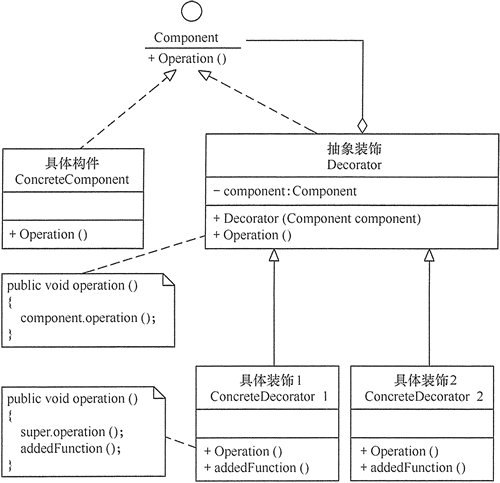

在现实生活中，常常需要对现有产品增加新的功能或美化其外观，如房子装修、相片加相框等。在软件开发过程中，有时想用一些现存的组件。这些组件可能只是完成了一些核心功能。但在不改变其结构的情况下，可以动态地扩展其功能。所有这些都可以釆用装饰模式来实现。
装饰者（Decorator）模式
的定义：指在不改变现有对象结构的情况下，动态地给该对象增加一些职责（即增加其额外功能）的模式，它属于对象结构型模式。
装饰者（Decorator）模式的主要优点有：
其主要缺点是：装饰模式增加了许多子类，如果过度使用会使程序变得很复杂。
通常情况下，扩展一个类的功能会使用继承方式来实现。但继承具有静态特征，耦合度高，并且随着扩展功能的增多，子类会很膨胀。如果使用组合关系来创建一个包装对象（即装饰对象）来包裹真实对象，并在保持真实对象的类结构不变的前提下，为其提供额外的功能，这就是装饰模式的目标。下面来分析其基本结构和实现方法。
装饰模式主要包含以下角色。
结构图如下图所示：

创建抽象构件角色
public interface Component
{
public void operation();
}创建具体构件角色
public class ConcreteComponent implements Component
{
public ConcreteComponent()
{
System.out.println("创建了具体构件角色");
}
@Override
public void operation()
{
System.out.println("调用具体构件角色的方法operation()");
}
}创建抽象装饰角色
public abstract Decorator implements Component
{
//继承并组合抽象构件角色
private Component component;
public Decorator(Component component)
{
this.component=component;
}
@Override
public void operation()
{
component.operation();
}
public void addedFunction();
}创建具体装饰角色
public class ConcreteDecorator extends Decorator
{
public ConcreteDecorator(Component component)
{
super(component);
}
public void operation()
{
super.operation();
addedFunction();
}
@Override
public void addedFunction()
{
System.out.println("为具体构件角色增加额外的功能addedFunction()");
}
}测试方法
public class DecoratorPattern
{
public static void main(String[] args)
{
Component p=new ConcreteComponent();
p.operation();
System.out.println("---------------------------------");
Component d=new ConcreteDecorator(p);
d.operation();
}
}具体运行结果如下
创建具体构件角色
调用具体构件角色的方法operation()
---------------------------------
调用具体构件角色的方法operation()
为具体构件角色增加额外的功能addedFunction()装饰者模式通常在以下几种情况使用。